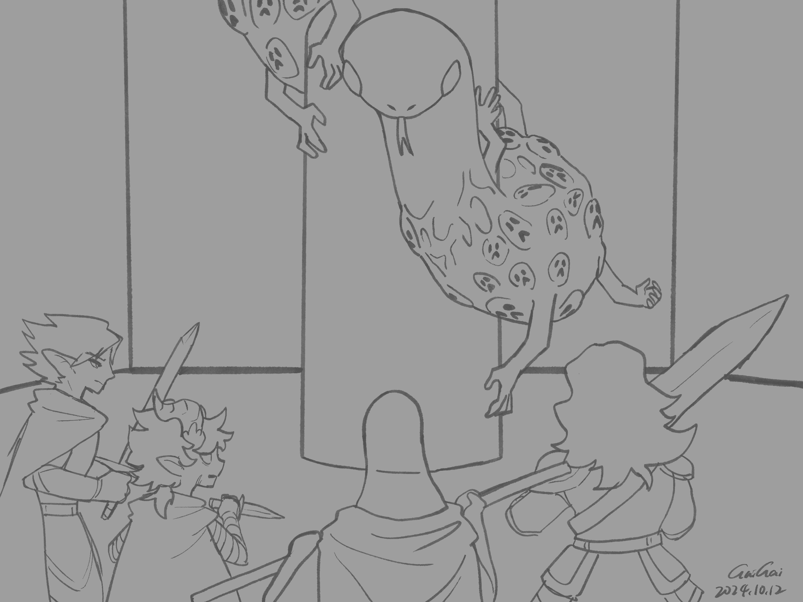

Chapter 4: The Heartbroken Endgame
Seats of the Eclipse


Seats of the Eclipse
15051.10.18
烏波睜開雙眼，除了眼前不遠處的魯米歐外，周圍還有六顆巨大的心臟。他的腦中傳來了聲音，告訴他與魯米歐，他們必須將對方擊倒，才能取得心空席的位子。而在勝負揭曉之時，尚未脫離心臟的支援者們，都將永遠被困在裡面。烏波這才發現，自己的夥伴們都被困在心臟裡。
烏波與魯米歐馬上分頭開始對周圍的心臟攻擊，但他們也發現這些心臟十分厚實，不易擊破。
在心臟內的支援者們也一一甦醒。心臟裡頭的空間挺大的，但不時心臟的肌肉就會用力擠壓他們，甚至越擠越用力。支援者們從裡側對心臟攻擊，嘗試逃脫出來。
更讓人感到困惑的是，這六顆心臟的位置還不時更換。好不容易看到心臟有出現裂痕，烏波卻發現那顆心臟換到離他有些距離的位置，他只好繼續朝著眼前的心臟攻擊。人能救出一個算一個。如果能優先就出自己的夥伴們更好。
不久後，在烏波、魯米歐從外側攻擊的輔助下，巴斯與羅特都突破了心臟。他們兩人也一起幫忙。而在賽柏脫困後，其他支援者都還困在心臟裡。不過對烏波來說，那已經不重要了。烏波朝著魯米歐展開攻勢。
魯米歐不僅不容易受到傷害，一把握在手中發光的小刀，還一口氣給烏波造成了近乎致命的傷害。雖然有夥伴們的輔助，烏波還是倒在魯米歐眼前。賽柏趕緊為烏波治療，但馬上，魯米歐的一波範圍攻擊，讓好不容易穩定的烏波再次倒下。
巴斯和賽柏輪番輸出，羅特也盡可能多多少少做出些貢獻。而在賽柏的狼牙棒重擊下，魯米歐被打向空中。
「你真的這麼想要這個心空席啊……」
魯米歐遺言
魯米歐從空中墜下，化為一團火焰，重擊地面，烏波又再次昏去。
冒險者們趕緊為烏波穩定傷勢。就算是身經百戰的他，這次也不得不承認對手太強了。
轉眼間，烏波與三名夥伴被傳送回靈魂議會。其他人，包含魯米歐、譚，或是其他支援者，都沒有出現。羅特和賽柏身體的殘缺也沒有復原。
議員們朝著烏波靠近，領著他到一旁坐著休息。他們恭喜他成為新任的心空席，並讓他向芬尼爾許一個願。烏波想了想，許了讓自己的夥伴身體恢復原狀的願，羅特的眼睛與賽柏的雙耳長了回來。
在議員們的手術下，他們將烏波的心臟（或者應該說，相當於他的心臟的部位）挖出，留下一個空洞的凹槽。至此，烏波正式成為心空席了。
巴斯注意到流體升降梯內似乎有動靜。一顆蛇的頭從中竄出，但這與羅特印象中的大小差太多了。自從來到斐納札後，芒果不知道何時不見了。原本他小到可以收在羅特腰邊的小袋而已，現在卻異常的粗壯，要吞下一個人應該都不難。而他身上的紋路更是讓人感到恐懼，一張張表情痛苦扭曲的臉印在上面，甚至身體周圍還有突出的四肢，就像是把人吞了下去，卻沒有完全消化的模樣。
「恭喜你啊，烏波。」芒果吐著蛇信，爬到烏波一旁。議員們對他不認識，也保持著些微的警戒。「我有一個禮物要送你。」
芒果用力從口中將一個球狀物吐了出來。消化到一半的皮肉十分破爛，但很顯然的，那是顆頭骨，而且是前任心空席的頭骨。芒果將吐出的頭骨捲了幾來，將它抬到烏波胸前被挖出的凹槽，放了進去。烏波很自然地將這顆頭骨融進體內，也沒有多想什麼。
「你收了禮物，那我也有要拿走的東西。」一瞬間，芒果竄到了賽柏身邊，纏在他的左腳上，用他的毒牙用力咬了一口。事情發生得太快，冒險者們不知該如何反應，想抓住芒果卻抓不住。賽柏掙扎著，戰鬥後狼牙棒已經收起，一時抓不到。他伸手到右腳口袋內，將縫在褲管的涅西斯聖徽用力扯下，朝著烏波丟去。
芒果張開他的大口，吐出了一個傳送門，帶著賽柏竄了進去，然後傳送門就關上了。羅特看見傳送門的那一端是他們見過的場景。那是他們來這裡前，在地面的最後一處：那座廢棄的芬尼爾祠堂。
羅特趕緊衝向升降梯，他必須夠快，才有機會能拯救他的夥伴。烏波和巴斯健壯，也跟了上去。羅特不管經過的各個區域造成的負面效果，一路衝到當時他們降落到斐納札的入口，那裡有一條粗粗的藤條懸掛著。羅特抓了就向上爬。
烏波和巴斯則在從升降梯下到地面後，一有機會就將周圍點火，一路點到心空域。心空域的人們一看見烏波，就跪在地上向他朝拜。烏波大力喊著，要心空域的人們跟著他一起爬到地面，傳播芬尼爾的福音，但他再怎麼大喊，人們卻完全沒有反應。就連心空域的人們也感到疑惑：明明他是新任的心空席，怎麼他的話語卻沒有任何強製性？
烏波發現沒有成效後，和巴斯兩人便抓著藤條向上爬了。
地面上，羅特趴在地上喘息。不久前經歷的一切，加上剛才拚了老命的跑和爬，他就快昏過去了。烏波和巴斯爬到地面後，巴斯將垂在通道口的藤條砍斷，確保斐納札的人們沒有機會上來。烏波看到後，則拿出自己的麻繩，將麻繩綁了上去。他還是希望能讓月神的子民們能回到地面。
巴斯將羅特扛到祠堂外後，便放火將祠堂燒成灰燼，任大火繼續往森林燒去。巴斯也看見祠堂外有一條重重的拖曳痕跡，大概是芒果拖著賽柏走的痕跡吧。
虛弱的羅特站了起來，往前走。森林內追尋著夥伴，這記憶好熟悉。
這一次，不要再失去更多夥伴了。這一次，不可以再悲劇收場了。
賽柏睜開雙眼，視線內有好多生面孔。一名女子向他伸出了手。
「啊，你醒了。你沒事吧？」女子說道。賽柏坐了起來。「我們把那條蛇趕走了，把你搬進洞穴內休息。你已經睡了好一陣子了。」
這些人的穿著有些許熟悉，賽柏知道他們應該也是樹林神涅西斯的信徒。「涅西斯，這些人，我能信嗎？」他閉上雙眼默默想著。
「這些人都是我的忠誠信徒，可以放心相信他們。」涅西斯的聲音傳入賽柏腦中。
「在地底下的時候，我聯繫不到祢。」
「是的，那裡有我不敢碰的力量。」
但至少現在，賽柏可以暫時相信這些與他相同信仰的人們。
15051.10.18
Ubbo opened his eyes. In addition to Lumio not far away in front of him, there were six huge hearts around him. A voice came from his head, telling him and Lumio that they must knock each other down in order to take the seat of the Heart. And when the winner is announced, the supporters who have not left Sean's heart will be trapped inside forever. Ubbo then realized that his friends were trapped in the heart.
Ubbo and Lumio immediately split up and started attacking the surrounding hearts, but they also found that these hearts were very thick and difficult to break.
The supporters in the heart also woke up one by one. The space in the heart is quite large, but from time to time the heart muscles will squeeze them hard, even harder and harder. The supporters attacked the heart from the inside and tried to escape.
What makes people even more confused is that the positions of these six hearts change from time to time. After finally seeing a crack in the heart, Ubbo found that the heart had moved some distance away from him, so he had no choice but to continue attacking the heart in front of him. Every person who can be rescued counts as one. It would be better if you give priority to your own friends.
Soon after, with the help of Ubbo and Lumio attacking from the outside, both Buzz and Lott broke through the heart. The two of them also helped together. After Psyber escaped, other supporters were still trapped in their hearts. But to Ubbo, that doesn't matter anymore. Ubbo attacks Lumio.
Lumio was not only invulnerable to damage, but with the glowing knife in his hand, he also caused near-fatal damage to Ubbo in one breath. Despite the help of his friends, Ubbo still fell in front of Lumio. Psyber rushed to treat Ubbo, but immediately, Lumio's Beau range attack made Ubbo, who was finally stable, fall down again.
Buzz and Psyber take turns to output, and Lott also contributes as much as possible. And under the heavy blow of Psyber's mace, Lumio was hit into the air.
"You really want this empty seat..."
Lumio Last words
Lumio fell from the sky and turned into a ball of flames, hitting the ground hard, and Ubbo fainted again.
The adventurers rushed to stabilize Ubbo's injuries. Even though he has experienced hundreds of battles, he has to admit that his opponent is too strong this time.
In the blink of an eye, Ubbo and three partners were transported back to the Soul Parliament. No one else showed up, including Lumio, Tam, or other backers. The physical mutilations of Lott and Psyber have not recovered.
The MPs approached Ubbo and led him to sit aside to rest. They congratulated him on becoming the new Xin Kong seat and asked him to make a wish to Phynoir. Ubbo thought for a while and made a wish to restore his partner's body to its original state. Lott's eyes and Psyber's ears grew back.
Under the operation of the councilors, they dug out Ubbo's heart (or should be said, the part equivalent to his heart), leaving a hollow groove. At this point, Ubbo has officially become an empty seat.
Buzz noticed what seemed to be movement within the fluid elevator. A snake's head sprang out, but the size was much different from Lott's impression. Since arriving at Fenadra, Mango disappeared without knowing when. Originally he was small enough to fit in the pouch on Lott's waist, but now he is extremely thick and it should not be difficult to swallow a person. The lines on his body were even more frightening, with faces with painful and twisted expressions imprinted on them, and even protruding limbs around his body, as if he had swallowed a person but not completely digested it.
"Congratulations, Ubbo." Mango spit out a snake letter and crawled to Ubbo's side. The congressmen did not know him and were slightly wary. "I have a gift for you."
Mango spit out a ball-shaped object from his mouth. The half-digested skin and flesh were very tattered, but it was obvious that it was a skull, and that it was the skull of his predecessor. Mango rolled up the spitted out skull a few times, lifted it to the dug groove on Ubbo's chest, and put it in. Ubbo naturally integrated the skull into his body without thinking too much.
"You accepted the gift, so I also have something to take away." In an instant, Mango rushed to Psyber's side, wrapped around his left foot, and bit hard with his fangs. Things happened so fast that the adventurers didn't know how to react. They wanted to catch Mango but couldn't. Psyber was struggling. After the battle, the mace had been put away and he couldn't catch it for a while. He reached into his right foot pocket, pulled off the Holy Emblem of Nesis sewn on his trousers, and threw it towards Ubbo.
Mango opened his big mouth, spit out a portal, rushed in with Psyber, and then the portal closed. Lott saw the scene they had seen on the other side of the portal. That was the last place on the ground before they came here: the abandoned Phynoir ancestral hall.
Lott rushed to the elevator, he had to be fast enough to have a chance to save his partner. Ubbo and Buzz were strong and followed suit. Lott, regardless of the negative effects caused by the various areas they passed, rushed all the way to the entrance of Fenadra when they landed, where a thick rattan was hanging. Lott Climb up once you catch it.
Ubbo and Buzz, after descending from the elevator to the ground, set fire to their surroundings at every opportunity, all the way to the central airspace. As soon as the people in the Heart Space saw Ubbo, they knelt on the ground and worshiped him. Ubbo shouted vigorously, and the people in the heart space climbed to the ground with him to spread the gospel of Phynoir, but no matter how loud he shouted, people had no reaction at all. Even the people in the Heart Kong Realm are confused: He is obviously the new Heart Kong Seat, but why are there no compulsions in his words?
After Ubbo found that it was ineffective, he and Buzz grabbed the rattan and climbed up.
On the ground, Lott lay on the ground panting. After everything he had experienced not long ago, plus the desperate running and crawling he had just done, he almost fainted. After Ubbo and Buzz climbed to the ground, Buzz cut off the rattan hanging at the entrance of the passage to ensure that the people of Fenadra had no chance to come up. After Ubbo saw it, he took out his own hemp rope and tied it up. He still hopes that the people of Moon God can return to the ground.
Buzz After carrying Lott outside the ancestral hall, he set fire to the ancestral hall and burned it to ashes, letting the fire continue to burn into the forest. Buzz also saw a heavy drag mark outside the ancestral hall, probably the mark of Mango dragging Psyber away.
The weak Lott stood up and walked forward. The memory of chasing friends in the forest is so familiar.
This time, don’t lose more partners. This time, it can't end in tragedy.
Psyber Opening his eyes, there were many faces in his sight. A woman reached out to him.
"Ah, you're awake. Are you okay?" the woman said. Psyber sat up. "We drove away the snake and moved you into the cave to rest. You have been sleeping for a long time."
The clothes of these people were somewhat familiar, and Psyber knew that they should also be followers of the forest god Nesis. "Nesis, can I trust these people?" He closed his eyes and thought silently.
"These people are my loyal believers, you can trust them." Nesis's voice entered Psyber's mind.
"When I was underground, I couldn't contact you."
"Yes, there is power there that I dare not touch."
But at least now, Psyber can temporarily believe in these people who have the same beliefs as him.